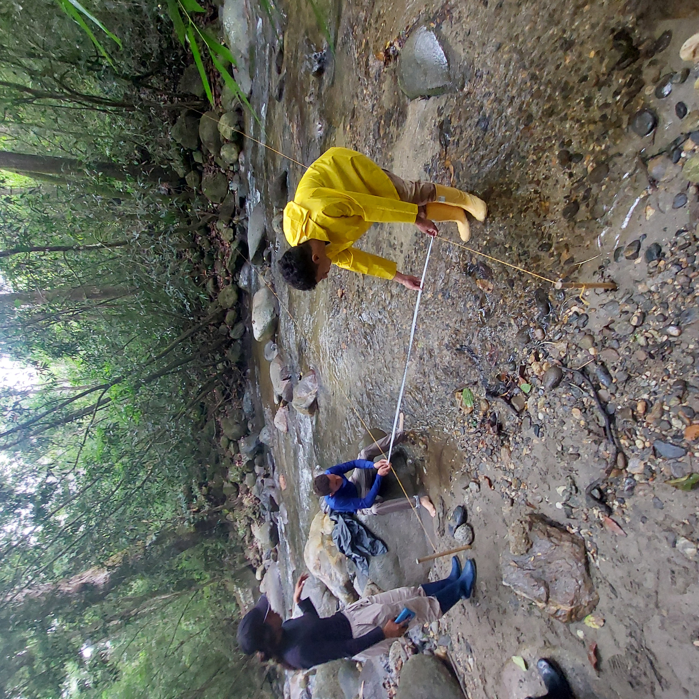
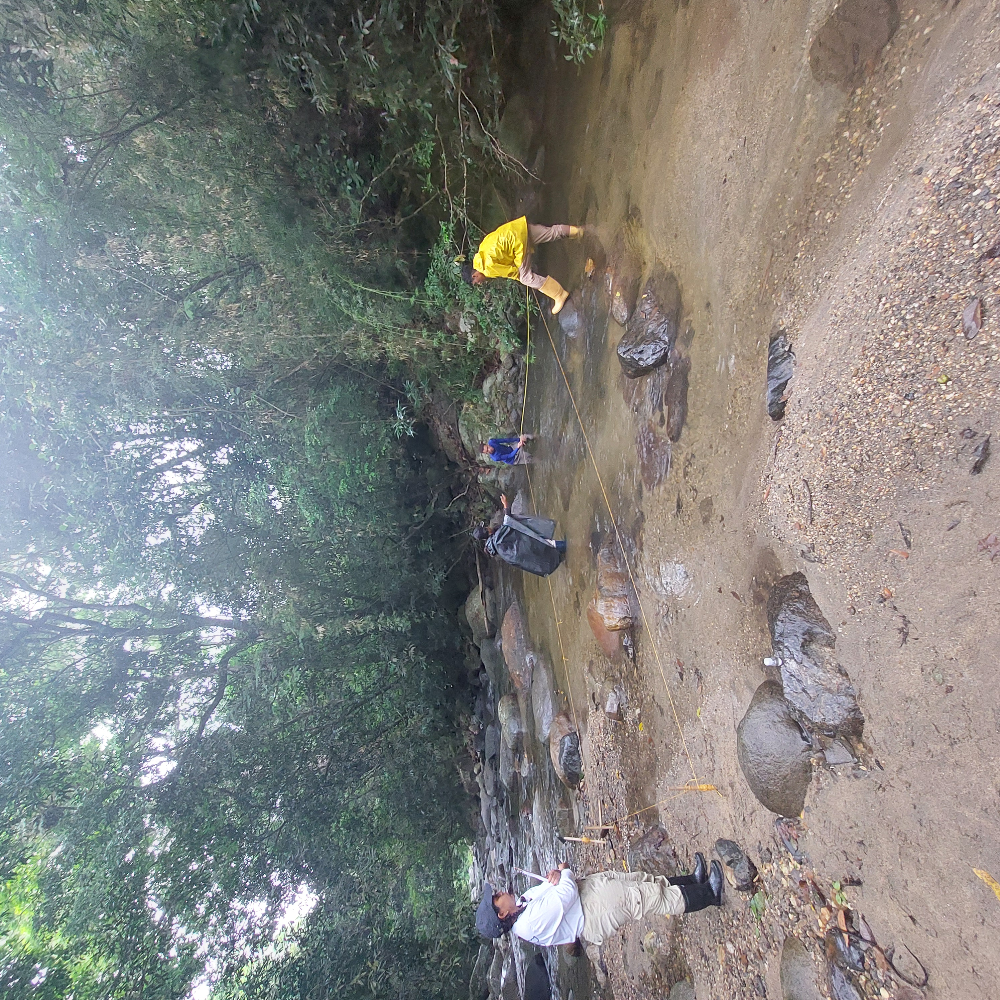
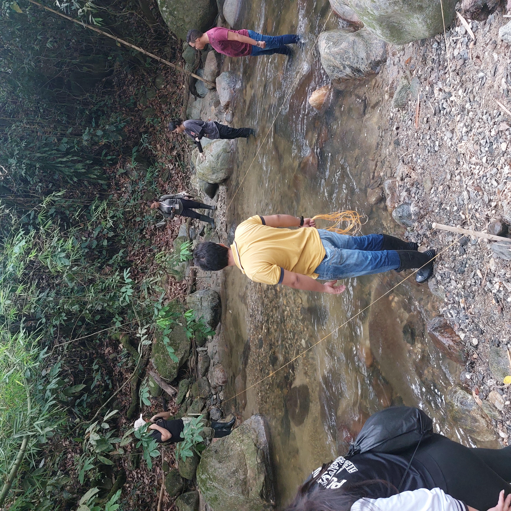
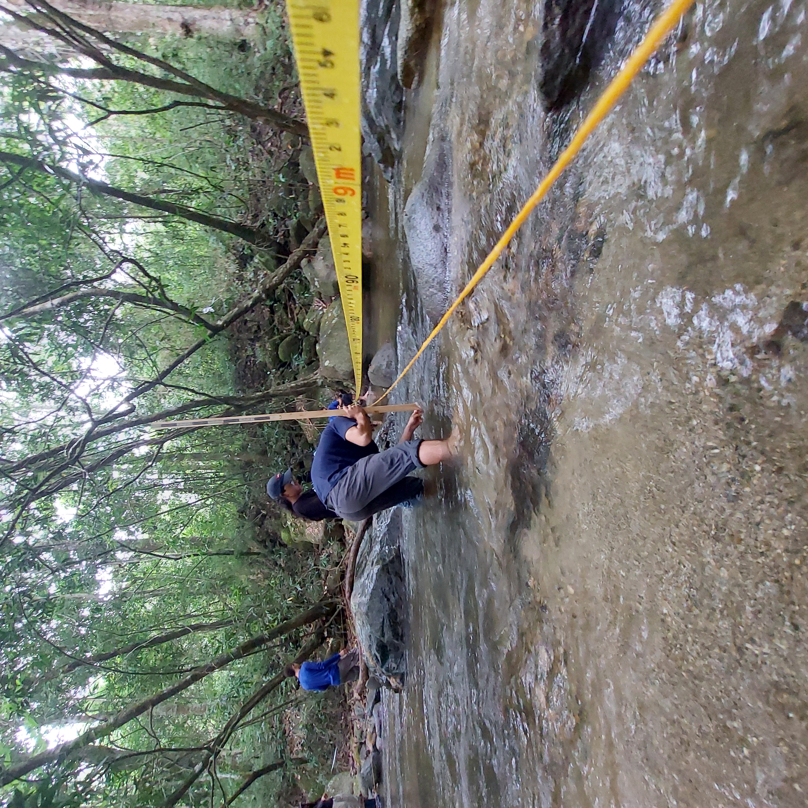
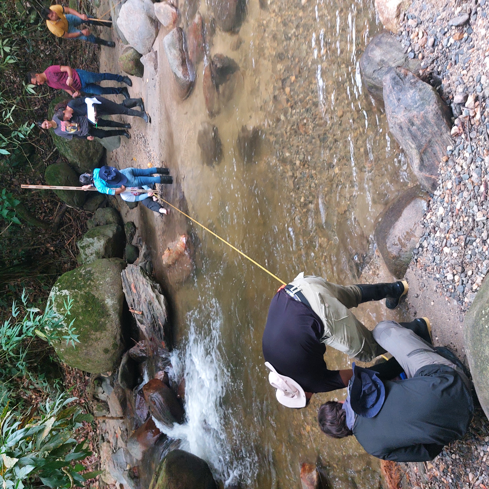

Salida de campo
TEMA: Salida de Campo de Ecología 1

La presente actividad tiene como objetivo, el reconocimiento de ecosistemas en ambientes fluviales, para aprender a evaluar parámetros ambientales, relacionados con la hidrología, la fisicoquímica y la geomorfología, asícomo el entorno relacionado con la vegetación de las riberas y la relación de estos atributos con la estructura y diversidad de ensamblajes de macroinvertebrados acuáticos, bajo diferentes escenarios de alteración que se evidencian en el sector de Minca, Sierra Nevada de Santa Marta.
Fechas de la salida por cada grupo de Ecología

Ecología - Viernes a domingo 02 y 04 de octubre. Salimos a las 5.45 am.
Guía de campo

La siguiente guía recoge los diferentes pasos a realizar en campo, es necesario estudiarla, dias previos a la actividad, para tener mayor claridad sobre aspectos necesarios.
Enlace a la guía de Campo Guía general de campo, que será alimentada con los cuatro formatos que se relacionan a continuación.
Los siguientes enlaces son para que confirme su asistencia a la salida de campo. Se requiere que cada estudiante sepa a qué salida asistirá.
Confirmación de asistencia Eco. Viernes y Sábado 2 y 4 de octubre.
A continuación se relacionan algunos enlaces complementarios que se deben descargar para los diferentes momentos de la actividad: antes de, durante y después de la salida de campo.
Formatos de campo_sept. 2.xlsx Se requiere llevar este archivo para la actividad de cómputo que realizarémos durante la salida.
Formatos de campo para imprimir.docx Es necesario que cada grupo de trabajo, lleve estas guías impresas, para tabular la información en los sitios a visitar.
Guía de Campo - RQI.pdf Cada grupo debe llevar una copia impresa de esta guía, la cual se relaciona con la valoración de las riberas en los tramos del río a visitar. En este enlace, se encuentra un artículo referente para esta guía Articulo RQI
Video de cómo tabular los datos (*Pendiente de grabar) El siguiente video es un ejemplo de lo que se requiere tabular para la actividad de campo. Se requiere estudiar, previo a la salida.
Guías taxonómicas Se van a requerir para la identificación de los taxones colectado de campo y transportados al laboratorio de Biología.
5.1 Claves generales
5.3 Claves Roldán
5.5 Claves htm - macroinv. Norteamérica
- Tabulación taxones identificados. En los siguientes enlaces, se tabularán los resultados de la identificación y conteo de taxones, que se realizará en el laboratorio de Biología, posterior a la salida de campo. Nota: Cada estudiante debe tener claro a que grupo de ecología pertenece, para que no haya inconvenientes a la hora de tabular los datos.
6.1 Archivo Excel en línea, para Tabulación taxones identificados. Enlace para que cada grupo de estudiantes, vaya tabulando los taxones identificados.
- Imágen de bolsas y viales requeridos
- Imagen de los viales para las muestras de agua. Se requiere comprar 9 en total.
2. Procedimientos de campo
Las siguientes fotos y videos muestran el paso a paso de los procedimientos que se realizan en la actividad de campo, para valorar encamblajes de macroinvertebrados y su relación con parámetros de su ambiente (hidrológico, batimétrico, fisicoquímico y del bosque de ribera). Nota: el componente de peces no entra en el informe pero se trabaja de forma complementaria.
En cada uno de los sitios de muestreo, los estudiantes son divididos en dos grupos: (1) los que toman los datos ambientales y (2) los que colectan los macroinvertebrados acuáticos. Para el componente ambiental se realizan los siguientes pasos: (1) valoración hidrológica (método del óbjeto flotante), (2) valoración batimétrica, (3) valoración fisicoquímica, (4) valoración hidrológica (método de la sal) y (5) valoración de la calidad de las riberas.
2.1 Hidrológicos - campo
Para este componente se requiere contar con los siguientes materiales: (1) un grupo de por lo menos cuatro estudiantes, (2) cuatro estacas y (3) cuerda de colores para constrir la parcela, (4) objeto flotador, (5) un cronómetro y la planilla impresa para tabular los datos.
Paso 1. Montaje de la parcela. Escoger un tramo recto, en donde pueda desplazarse el objeto flotante. En total son tres parcelas las que se instalan por cada lugar.


Nota: se debe escoger un tramo preferiblemente recto, para el montaje de la parcela.
🎥Video 1. Diseño de la parcela
Paso 2. Medición de la distancia que recorrera el objeto flotante. Realizar varias mediciones para poder obtener una distancia promedio.

🎥Video 2. Descripción del procedimiento a realizar
🎥Video 3. Medición de las distancias
Paso 4. Distancia recorrida por el objeto flotante. Es un vial que debe llenarse 3 cuartas partes con agua.
🎥Video 4. Descripción del proceso de desplazamiento del objeto flotante
🎥Video 5. Distancia recorrida por el objeto flotante
2.1 Batimetría - campo
Para este procedimiento, se requiere contar con: (1) un decámetro, (2) una vara metreada, (3) una cuerda que atraviese el ancho del río, (4) identificar los diferentes sustratos del lecho o fondo del río, descritos en la planilla (5) planilla de batimetría impresa. En cada sitio visitado, se deben realizar tres perfiles batimétricos.


🎥Video 6. Descripción del procedimiento para las mediciones en el perfil batimétrico.
🎥Video 7. Mediciones en el perfil batimétrico.
🎥Video 8. Mediciones en el perfil batimétrico.
🎥Video 9. Mediciones en el perfil batimétrico.
2.3 Fisicoquímicos - campo
Para este procedimiento, se encienden las sondas, se toma una muestra de agua con el valde y se procede a realizar las mediciones de las variables.
🎥Video 10. Procedimiento para la medición de las variables con las sondas de campo.
2.4 Macroinvertebrados - campo
Para este procedimiento se requieren los siguientes materiales: (1) bandejas, (2) pinzas y agujas entomológicas, (3) alcohol, (4) bolsas de calibre grueso, (5) redes de colecta, (6) un grupo de mínimo 9 estudiantes. Se revisarán 3 replicas de los sustratos: rocas, gravas, arenas y hojarásca.
🎥Video 11. Colecta del sustrato de gravas (parte 1).
🎥Video 12. Colecta del sustrato de gravas (parte 2).
🎥Video 13. Colecta del sustrato de gravas (parte 3).
🎥Video 14. Colecta y almacenamiento de hojarasca
🎥Video 15. Condiciones del tramo avaluado.
2.5 Peces (complementario)
Los materiales requeridos para este procedimiento son: formol, redes y bolsas de calibre grueso.
🎥Video 16. Descripción de la actividad
🎥Video 17. Colecta de peces con red de mano.
🎥Video 18. Colecta de peces con red tipo nasa.
2.6 Tabulación de datos ambientales
A continuación se muestra el procedimiento para la tabulación de datos de los parámetros ambientales en los formatos entregados por el docente. En el repositorio de videos, también se encuentran los procedimientos de tabulación (ENLACE_VIDEOS).
🎥 Video 20. Tabulación de datos en la cabaña
Complentos en sala de cómputo:
🎥 Video 21. Tabulación_ Datos de campo-Batimetría
🎥 Video 22. Tabulación_ Datos de campo - Hidrología (parte 1) Objeto flotador
🎥 Video 23. Tabulación_ Datos de campo - Hidrología (parte 2) Objeto flotador
🎥 Video 24. Tabulación_ Datos de campo - Hidrología (parte 3) Trazador con sal
2.7 Taxonomía de macroinvertebrados acuáticos
Los materiales requeridos son, bandejas, estereoscopios, papel de pergamino, marcador para rotular, alcohol, equipo de disección, cajas de petri, bolsas con las muestras tomadas de campo y computador.


🎥Video 25. Procedimiento para la separación de los macroinvertebrados.
🎥Video 26. Procedimiento para la separación de los macroinvertebrados.
🎥Video 27. Procedimiento de identificación taxonómica y tabulación en el formato en línea.
🎥Video 28. Procedimiento de identificación taxonómica y tabulación en el formato en línea. ::: ::::